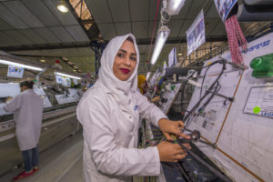
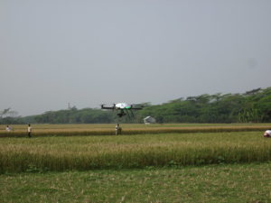
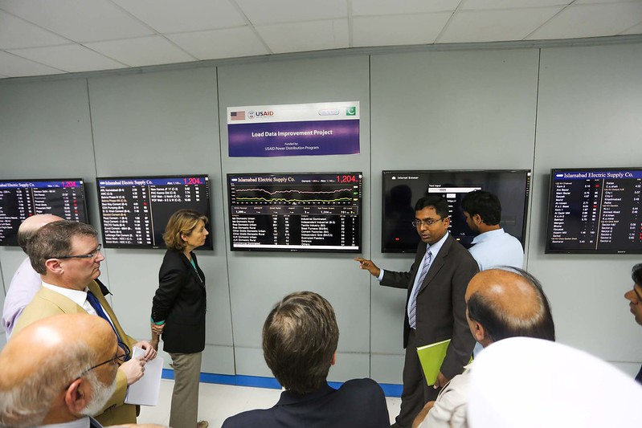

Automation
What is automation?

Automation involves techniques and methods applied to enable machines, devices, and systems to function with minimal or no human involvement. Automation is used, for example, in applications for managing the operation of traffic lights in a city, navigating aircrafts, running and configuring different elements of a telecommunications network, in robot-assisted surgeries, and even for automated storytelling (which uses artificial intelligence software to create verbal stories). Automation can improve efficiency and reduce error, but it also creates new opportunities for error and introduces new costs and challenges for government and society.
How does automation work?
Processes can be automated by programming certain procedures to be performed without human intervention (like a recurring payment for a credit card or phone app) or by linking electronic devices to communicate directly with one another (like self-driving vehicles communicating with other vehicles and with road infrastructure). Automation can involve the use of temperature sensors, light sensors, alarms, microcontrollers, robots, and more. Home automation, for example, may include home assistants such as Amazon Echo, Google Home, and OpenHAB. Some automation systems are virtual, for example, email filters that automatically sort incoming emails into different folders, and AI-enabled moderation systems for online content.
The exact architecture and functioning of automation systems depend on their purpose and application. However, automation should not be confused with artificial intelligence in which an algorithm-led process ‘learns’ and changes over time: for instance, an algorithm that reviews thousands of job applications and studies and learns from patterns in the applications is using artificial intelligence, while a chatbot that replies to candidates’ questions is using automation.
For more information on the different components of automation systems, read also the resources about the Internet of Things and sensors, robots and drones, and biometrics.
How is automation relevant in civic space and for democracy?
Automated processes can be built to increase transparency, accuracy, efficiency, and scale. They can help minimize effort (labor) and time; reduce errors and costs; improve the quality and/or precision in tasks/processes; carry out tasks that are too strenuous, hazardous, or beyond the physical capabilities of humans; and generally free humans of repetitive, monotonous tasks.
From a historical perspective, automation is not new: the first industrial revolution in the 1700s harnessed the power of steam and water; the technological revolution of the 1880s relied on railways and telegraphs; and the digital revolution in the 20th century saw the beginning of computing. Each of these transitions brought fundamental changes not only to industrial production and the economy, but to society, government, and international relations.
Now, the fourth industrial revolution, or the ‘automation revolution’ as it is sometimes called, promises to once again disrupt work as we know it as well as relationships between people, machines, and programmed processes.
When used by governments, automated processes promise to deliver government services with greater speed, efficiency, and coverage. These developments are often called e-government, e-governance, or digital government. E-government includes government communication and information sharing on the web (sometimes even the publishing of government budgets and agendas), facilitation of financial transactions online such as electronic filing of tax returns, digitization of health records, electronic voting, and digital IDs.
Additionally, automation can be used in elections to help count votes, register voters, and record voter turnout to increase trust in the integrity of the democratic process. Without automation, counting votes can take weeks or months and can lead to results being challenged by anti-democratic forces and to possible voter disenchantment with democratic systems. E-voting and automated vote counting have already become politicized in many countries like Kazakhstan and Pakistan, although many countries are increasingly adopting e-voting systems to help increase voter turnout and participation and hasten the election process.
The benefits of automating government services are numerous, as the UK’s K4D helpdesk explains, by lowering the cost of service delivery, improving quality and coverage (for example, through telemedicine or drones); strengthening communication, monitoring, and feedback, and in some cases by encouraging citizen participation at the local level. In Indonesia, for example, the Civil Service Agency (BKN) introduced a computer-assisted testing system (CAT) to disrupt the previously long-standing manual testing system that created rampant opportunities for corruption in civil service recruitment by line ministry officials. With the new system, the database of questions is tightly controlled, and the results are posted in real time outside the testing center.
In India, an automated system relying on a specifically designed computer (an Advanced Virtual RISC) and the common telecommunications standard GSM (Global System for Mobile) is used to inform farmers about exact field conditions and to point to the necessary next steps with command functions such as irrigating, plowing, deploying seeds and carrying out other farming activities.

As with previous industrial revolutions, automation changes the nature of work, and these changes could bring unemployment in certain sectors if not properly planned. The removal of humans from processes also brings new opportunities for error (such as ‘automation bias’) and raises new legal and ethical questions. See the Risks section below.
Opportunities

Automation can have positive impacts when used to further democracy, human rights, and governance issues. Read below to learn how to more effectively and safely think about automation in your work.
Increase in productivityAutomation may improve output while reducing the time and labor required, thus increasing the productivity of workers and the demand for other kinds of work. For example, automation can streamline document review, cutting down on the time that lawyers need to search through documents or academics through sources, etc. In Azerbaijan, the government partnered with the private sector in the use of an automated system to reduce the backlog of relatively simple court cases, such as claims for unpaid bills. In instances where automation increases the quality of services or goods and/or brings down their cost, a more significant demand for the goods or services can be served.
Automation can improve the speed, efficiency, quality, consistency, and coverage of service delivery and reduce human error, time spent, and costs. It can therefore allow activities to scale up. For example, the UNDP and the government of the Maldives used automation to create 3-D maps of the islands and chart their topography. Having this information on record would speed up further disaster relief and rescue efforts. The use of drones also reduced the time and money required to conduct this exercise: while mapping 11 islands would normally take almost a year, using a drone reduced the time to one day. See the Robots and Drones resource for additional examples.
Optimizing an automated task generally requires trade-offs among cost, precision, the permissible margin of error, and scale. Automation may sometimes require tolerating more errors in order to reduce costs or achieve greater scale. For more, see the section “Knowing when automation offers a suitable solution to the challenge at hand” in Automation of government processes.
For democratic processes, automation can help facilitate access for voters who cannot travel to polling stations via remote e-voting or using accessible systems at polling stations. Moreover, using automation for counting votes can help decrease user error in some cases and increase trust in the democratic process.
Automation may increase transparency by making data and information easily available to the public, thus building public trust and aiding accountability. In India, the State Transport Department of Karnataka has automated driving test centers hoping to eliminate bribery in the issuing of driver’s licenses. A host of high-definition cameras and sensors placed along the test track captured the movement of the vehicle while a computerized system decides if the driver has passed or failed the test. See also “Are emerging technologies helping win the fight against corruption in developing countries?”
Risks
The use of emerging technologies can also create risks in civil society programming. Read below on how to discern the possible dangers associated with automation in DRG work, as well as how to mitigate unintended – and intended – consequences.
Labor issuesWhen automation is used to replace human labor, the resulting loss of jobs causes structural unemployment known as “technological unemployment.” Structural unemployment disproportionately affects women, the poor, and other vulnerable members of society, unless they are re-skilled and provided with adequate protections. Automation also requires skilled labor that can operate, oversee or maintain automated systems, eventually creating jobs for a smaller section of the population. But the immediate impact of this transformation of work can be harmful to people and communities without social safety nets or opportunities for finding other work.
Additionally, there have been links drawn between increased automation and a rise in preferences for populist politicians as job loss begins to affect particularly low-wage workers. A study conducted by the Proceedings of the National Academy of Sciences (PNAS) found a correlation between the impact of globalization and automation and increased vote shares for right-wing populist parties in several European countries. Although automation can have a positive impact on overall profits, low-wage, non-educated workers may feel particularly impacted as wages remain low with their tasks being replaced by automated systems.
Automation systems equipped with artificial intelligence (AI) may produce results that are discriminatory towards some marginalized and minority groups when the system has learned from biased learning patterns, from biased datasets, or from biased human decision-making. The outputs of AI-equipped automated systems may reflect real-life societal biases, prejudices, and discriminatory treatment towards some demographics. Biases can also occur from the human implementation of automated systems, for instance, when the systems do not function in the real world as they were able to function in a lab or theoretical setting, or when the humans working with the machines misinterpret or misuse the automated technology.
There are numerous examples of racial and other types of discrimination being either replicated or magnified by automation. To take an example from the field of predictive policing, ProPublica reported after conducting an investigation in 2016 that COMPAS, a data-driven AI tool meant to assist judges in the United States, was biased against Black people while determining if a convicted offender would commit more crimes in the future. For more on predictive policing see “How to Fight Bias with Predictive Policing” and “A Popular Algorithm Is No Better at Predicting Crimes Than Random People.”
These risks exist in other domains as well. The University of Toronto and Citizen Lab report titled “Bots at the gate: A human rights analysis of automated decision-making in Canada’s immigration and refugee system” notes that “[m]any [asylum seekers and immigrants] come from war-torn countries seeking protection from violence and persecution. The nuanced and complex nature of many refugee and immigration claims is lost on these technologies, leading to serious breaches of internationally and domestically protected human rights, in the form of bias, discrimination, privacy breaches, due process and procedural fairness issues, among others. These systems will have life-and-death ramifications for ordinary people, many of whom are fleeing for their lives.”
Existing laws and regulations may not be applicable to automation systems and, in cases where they are, the application may not be well-defined. Not all countries have laws that protect individuals against these dangers. Under the GDPR (the European General Data Protection Regulation), individuals have the right not to be subject to a decision based only on automated processing, including profiling. In other words, humans must oversee important decisions that affect individuals. But not all countries have or respect such regulations, and even the GDPR is not upheld in all situations. Meanwhile, individuals would have to actively claim their rights and contest these decisions, usually by seeking legal assistance, which is beyond the means of many. Groups at the receiving end of such discrimination tend to have fewer resources and limited access to human rights protections to contest such decisions.
People tend to have faith in automation and tend to believe that technology is accurate, neutral, and non-discriminating. This can be described as “automation bias”: when humans working with or overseeing automated systems tend to give up responsibility to the machine and trust the machine’s decision-making uncritically. Automation bias has been shown to have harmful impacts across automated sectors, including leading to errors in healthcare. Automation bias also plays a role in the discrimination described above.
The ever-increasing use of automation brings ethical questions and concerns that may not have been considered before the arrival of the technology itself. For example, who is responsible if a self-driving car gets into an accident? How much personal information should be given to health-service providers to facilitate automated health monitoring? In many cases, further research is needed to even begin to address these dilemmas.
When automated systems make decisions that affect people’s lives, they blur the formation, context, and expression of an individual’s consent (or lack thereof) as described in this quote: “…[T]he dilution of the free basis of our individual consent – either through outright information distortion or even just the absence of transparency – imperils the very foundations of how we express our human rights and hold others accountable for their open (or even latent) deprivation.” See additional information about informed consent in the Data Protection resource.
Large-scale automation technologies require very high capital costs, which is a risk in case the use of the technology becomes unviable in the long term or does not otherwise guarantee commensurate returns or recovery of costs. Hence, automation projects funded with public money (for example, some “smart city ” infrastructure) require thorough feasibility studies for assessing needs and ensuring long-term viability. On the other hand, initial costs also may be very high for individuals and communities. An automated solar-power installation or a rainwater-harvesting system is a large investment for a community. However, depending on the tariffs for grid power or water, the expenditure may be recovered in the long run.
Questions
If you are trying to understand the implications of automation in your work environment, or are considering using aspects of automation as part of your DRG programming, ask yourself these questions:
-
Is automation a suitable method for the problem you are trying to solve?
-
What are the indicators or guiding factors that determine if automation is a suitable and required solution to a particular problem or challenge?
-
What risks are involved regarding security, the potential for discrimination, etc? How will you minimize these risks? Do the benefits of using automation or automated technology outweigh these risks?
-
Who will work with and oversee these technologies? What is their training and what are their responsibilities? Who is liable legally in case of an accident?
-
What are the long-term effects of using these technologies in the surrounding environment or community? What are the effects on individuals, jobs, salaries, social welfare, etc.? What measures are necessary to ensure that the use of these technologies does not aggravate or reinforce inequality through automation bias or otherwise?
-
How will you ensure that humans are overseeing any important decisions made about individuals using automated processes? (How will you abide by the GDPR or other applicable regulations?)
-
What privacy and security safeguards are necessary for applying these technologies in a given context regarding, for example, cybersecurity, protection or personal privacy, protecting operators from accidents, etc.? How will you build-in these safeguards?
Case studies
Automated Farming Vehicles“Forecasts of world population increases in the coming decades demand new production processes that are more efficient, safer, and less destructive to the environment. Industries are working to fulfill this mission by developing the smart factory concept. The agriculture world should follow industry leadership and develop approaches to implement the smart farm concept. One of the most vital elements that must be configured to meet the requirements of the new smart farms is the unmanned ground vehicles (UGV).”
Automated Voting Systems in Estonia
Since 2005, Estonia has allowed e-voting wherein citizens are able to cast their ballot online. In each succeeding election voters have increasingly chosen to cast online ballots to save time and participate in local and national elections with ease. Voters use digital IDs to help verify their identification and prevent fraud and ballots cast online are automatically cross-referenced with lists to ensure there is no duplication or voter fraud.
Automated Mining in South Africa
“Spiraling labour and energy costs are putting pressure on the financial performance of gold mines in South Africa, but the solution could be found in adopting digital technologies. By implementing automation operators can remove underground workers from harm’s way, and that is going to become an ever-bigger imperative if gold miners are to remain investable by international capital. This increased emphasis for the safety of the workforce and mines is motivating the development of the mining automation market. Earlier, old-style techniques of exploration and drilling compromised the security of mine labour force. Such examples have forced operators to develop smart resolutions and tools to confirm security of workers.”
Automating Processing of Uncontested Civil Cases to Reduce Court Backlogs in Azerbaijan, Case Study 14
“In Azerbaijan, the government developed a new approach to dealing with their own backlog of cases, one which addressed both supply side and demand side elements. Recognizing that much of the backlog stemmed from relatively simple civil cases, such as claims for unpaid bills, the government partnered with the private sector in the use of an automated system to streamline the handling of uncontested cases, thus freeing up judges’ time for more important cases.”
Reforming Civil Service Recruitment through Computerized Examinations in Indonesia, Case Study 6
“In Indonesia, the Civil Service Agency (BKN) succeeded in introducing a computer-assisted testing system (CAT) to disrupt the previously long-standing manual testing system that created rampant opportunities for corruption in civil service recruitment by line ministry officials. Now the database of questions is tightly controlled, and the results are posted in real time outside the testing center. Since its launch in 2013, CAT has become the de facto standard for more than 62 ministries and agencies.”
Real Time Automation of Indian Agriculture
“Real time automation of Indian agricultural system” using AVR (Advanced Virtual RISC) microcontroller and GSM (Global System for Mobile) is focused on making the agriculture process easier with the help of automation. The set up consists of processor which is an 8-bit microcontroller. GSM plays an important part by controlling the irrigation on field. GSM is used to send and receive the data collected by the sensors to the farmer. GSM acts as a connecting bridge between AVR microcontroller and farmer. Our study aims to implement the basic application of automation of the irrigation field by programming the components and building the necessary hardware. In our study different type of sensors like LM35, humidity sensor, soil moisture sensor, IR sensor used to find the exact field condition. GSM is used to inform the farmer about the exact field condition so that [they] can carry necessary steps. AT(Attention) commands are used to control the functions like irrigation, ploughing, deploying seeds and carrying out other farming activities.”
A study published in May 2020 on the discontinuation of e-voting in Kazakhstan highlights some of the political challenges around e-voting. Kazakhstan used e-voting between 2004 and 2011 and was considered a leading example. See “Kazakhstan: Voter registration Case Study (2006)” produced by the Ace Project Electoral Knowledge Network. However, the country returned to a traditional paper ballot due to a lack of confidence from citizens and civil society in the government’s ability to ensure the integrity of e-voting procedures. See “Politicization of e-voting rejection: reflections from Kazakhstan,” by Maxat Kassen. It is important to note that Kazakhstan did not employ biometric voting, but rather electronic voting machines that operated via touch screens.
References
- Adam, Isabelle & Mihály Fazekas, (2018). Are emerging technologies helping win the fight against corruption in developing countries? Pathways for Prosperity Commission.
- Angwin, Julia, et al., (2016). Machine Bias. Pro Publica.
- Cascella, Laura M., (n.d.). Artificial intelligence risks: automation bias. MedPro Group.
- Desierto, Diane, (2020). Human rights in the era of automation and artificial intelligence. EJIL:Talk! Blog of the European Journal of International Law.
- Herbert, Siân, (2019). Automation of government processes. K4D Helpdesk Report.
- Molnar, Petra & Lex Gill, (2018). Bots at the gate. University of Toronto International Human Rights Program (IHRP).
- Siegel, Eric, (2018). How to fight bias with predictive policing. Scientific American.
- The World Bank, (2018). Improving public sector performance through innovation and inter-agency coordination.
- Vardi, Moshe Y., (2017). What the Industrial Revolution really tells us about the future of automation and work. The Conversation.
- Yong, Ed, (2018). A popular algorithm is no better at predicting crimes than random people. The Atlantic.
Additional resources
- Asaro, Peter, (2012). On banning autonomous weapon systems: Human rights, automation, and the dehumanization of lethal decision-making. International Review of the Red Cross 94(886). 687-709.
- Committee of Ministers, (2020). Recommendation CM/Rec(2020)1 of the Committee of Ministers to member States on the human rights impacts of algorithmic systems . Council of Europe Portal.
- Eubanks, Virginia, (2017). Automating inequality: How high-tech tools profile, police, and punish the poor. Martin’s Press.
- Molnar, Petra, (2020). The human rights impacts of migration control technologies. European Digital Rights.
- Muro, Mark, et al., (2019). Automation and artificial intelligence – How machines are affecting people and places. Metropolitan Policy Program at Brooking Institution.
- Vooslo, Steve, (2018).The Pros and Cons of Employment Automation and Digitization. ICTWorks.